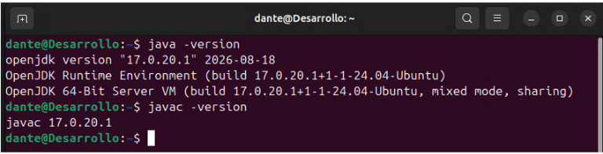
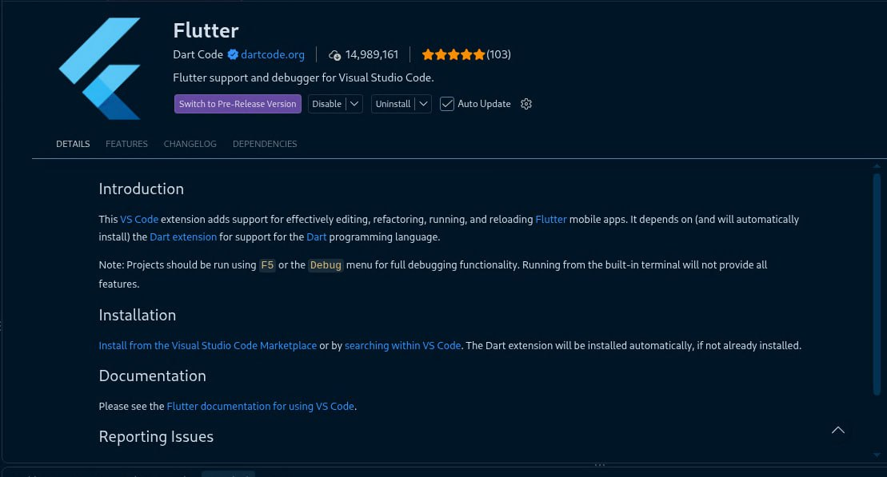
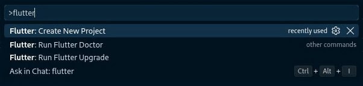
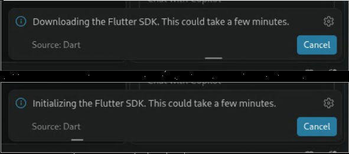
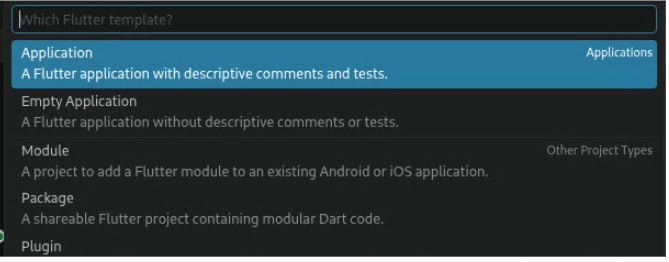
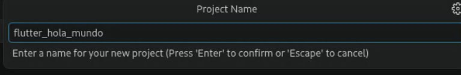
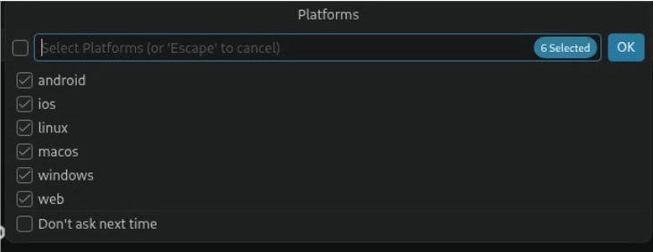
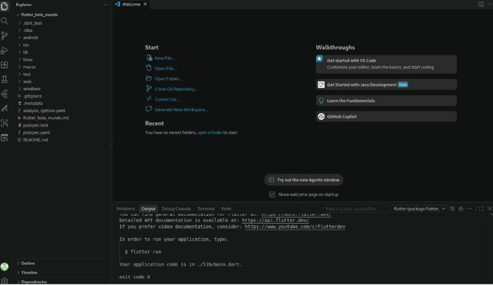
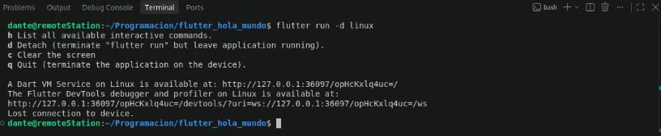
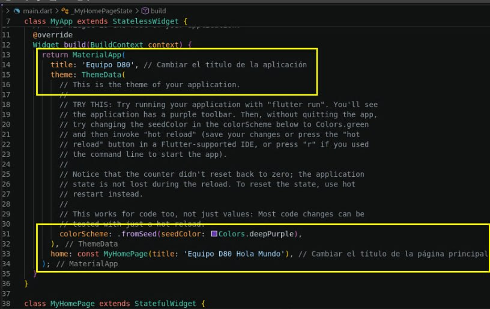

Kit de desarrollo de software y framework Flutter
Flutter es un kit de desarrollo de software (SDK por sus siglas en inglés) de código abierto
creado y mantenido por Google. Permite crear aplicaciones multiplataforma con una sola base
de código. Es decir, con un solo código podemos desarrollar para Android, iOS, web, Windows,
macOS y Linux.
Utiliza un lenguaje de programación propio llamado Dart, también desarrollado por Google y
optimizado para la creación de interfaces de usuario. Tiene una sintaxis similar a Java o C#
(C Sharp).
Entre sus funciones más interesantes está Hot Reload, que permite ver cómo los cambios en el código
cambian de forma casi instantánea la aplicación en la que se está trabajando.
La interfaz de Flutter está compuesta por widgets (botones, textos, filas, columnas),
lo que facilita diseñar interfaces visuales.
El compilador de Flutter compila directamente a código máquina (ARM o Intel),
lo que se traduce en un rendimiento fluido similar al de las aplicaciones
nativas tradicionales.
Objetivos
Siguendo este tutorial podrás instalar Flutter y configurarlo para trabajar con el editor de código Visual Studio Code.
- Cumplir con los requisitos previos a la instalación de Flutter
- Instalar Flutter.
- Ejecutar por primera vez Flutter.
- Configurar el entorno de desarrollo.
- Crear una pequeña aplicación de prueba en Visual Studio Code con Flutter..
Requisitos previos
Requisitos de hardware
Flutter pide requisitos mínimos en hardware para funcionar:
- Procesador: CPU de 64 bits (Intel o AMD).
- Memoria RAM: 4 GB; se recomiendan 8 GB.
- Espacio en disco: Ocupa 2.5 GB, pero esto es solo la herramienta; necesita entre 5 y 10 GB para utilizarla con Android Studio o VS Code.
Requisitos de software
Flutter requiere JDK (Java Development Kit) versión 16 o superior, que contiene las herramientas necesarias para escribir, compilar,
depurar y crear aplicaciones en el lenguaje de programación Java. También requiere las herramientas JRE (Entorno de Ejecución de Java) y JVM
(Máquina Virtual de Java), que ya vienen incluidas en la instalación del kit de desarrollo de Java.
Si se va a instalar en un SO Windows, se requiere también PowerShell 5.1 (viene por default en equipos con Windows 11).
Flutter también requiere Git, un sistema de control de versiones que permite a los desarrolladores colaborar
Flutter también requiere un editor de código para escribir y ejecutar el código fuente. Se recomienda Visual Code.
Requisitos del entorno de desarrollo
Flutter debe trabajar de la mano con Visual Studio Code o con Android Studio.
Dependiendo de si se van a desarrollar aplicaciones nativas para Windows, se requiere trabajar con Visual Studio; aquí se utilizará la versión Community.
Si se desea desarrollar aplicaciones móviles para Android, se necesita instalar Android Studio. Debe incluir las herramientas Android SDK y Android SDK Command-line
Tools. También puede ser necesario configurar un entorno virtual si se va a trabajar con un emulador de dispositivo Android en vez de usar un teléfono físico.
Nota: Para desarrollar aplicaciones para iOS, se requiere un equipo con macOS y Xcode.
Instalación en Linux
Paquetes necesarios
Previo a la instalación de Flutter en Linux, asegúrese de tener instalados los siguientes paquetes:
curlgitunzipxz-utilsziplibglu1-mesaclangcmakeninja-buildpkg-configlibgtk-3-devlibstdc++-12-dev
En sistemas operativos basados en Debian, los paquetes pueden instalarse utilizando apt-get:
$ sudo apt-get update -y && sudo apt-get upgrade -y
$ sudo apt-get install curl git unzip xz-utils zip libglu1-mesa
$ sudo apt-get install clang cmake ninja-build pkg-config libgtk-3-dev libstdc++-12-devLos paquetes con los que ya cuente Debian instalados no deberían preocuparnos. Aquellos que no estaban instalados deberían instalarse sin problemas; en caso de que alguno de los paquetes no se pueda instalar, se deberá leer el log de errores que muestra la terminal para determinar cuál es la causa, que puede ser un conflicto de paquetes.
Instalar JRE/JDK en Linux
Si vamos a desarrollar para Android, también es necesario instalar los paquetes JRE (Java Runtime Environment),
que es el entorno de ejecución. Este incluye una máquina virtual de Java (JVM), que es donde se ejecuta el código.
También se debe instalar el kit de desarrollo de Java (JDK). Este kit contiene lo necesario para programar, compilar y
crear software en Java. Contiene todo lo que tiene el paquete JRE, más el conjunto de herramientas para desarrollo, como el
compilador (javac) y el depurador de paquetes (jdb). Por lo que solo es necesario instalar JDK.
Para instalar JDK en Linux, es necesario actualizar los repositorios y luego instalar la versión predeterminada del JDK, como se muestra a continuación.
En una terminal, ejecute los siguientes comandos:
# Instalar JDK default que incluye JRE
$ sudo apt update
$ sudo apt install default-jdk
# Opcionalmente, se puede elegir qué versión de JDK se quiere instalar con:
$ sudo apt install openjdk-21-jdk
# Donde el número puede ser reemplazado por la versión a utilizar
# Comprobar que se ha instalado correctamente
# Ver la versión de Java
$ java --version
$ javac --version
Si la instalación ha salido correctamente, se mostrará algo como se ve en la siguiente imagen:

Instalar Visual Studio Code
En este tutorial se configurará Flutter para funcionar con Visual Studio Code en Linux.
La instalación de Visual Studio Code se puede realizar siguiendo estos pasos:
1. Descargar el paquete .deb desde la página oficial de Visual Studio Code: https://code.visualstudio.com/Download
2. Abrir una terminal y navegar hasta la carpeta donde se descargó el archivo .deb.
3. Ejecutar el siguiente comando para instalar Visual Studio Code:
$ sudo apt install ./.deb
# Donde .deb es el paquete que hemos descargado
# En caso de que de érror porque le falten dependencias, ejecutar:
$ sudo apt-get install -f # Esto instalará las dependencias faltantes y completará la instalación de Visual Studio Code
El paquete de instalación, además de instalar Visual Studio Code, añadirá al repositorio apt las llaves de seguridad para descargar las actualizaciones.
Instalar y configurar Flutter
Flutter debe ser instalado y luego configurado para trabajar con el editor de código elegido; en este tutorial será
Visual Studio Code. En cambio, si se elige Android Studio, su configuración será diferente, ya que este último es un IDE completo.
Pasos a seguir
- Abrir Visual Studio Code: Abrir el editor de código Visual Studio Code.
- Instalar la extensión de Flutter: Ir a la pestaña de extensiones y buscar "Flutter" para instalarla. Se debe elegir la extensión oficial de Flutter, la que venga que el desarrollador sea "Dart Code".
- Instalar Fluter en Visual Studio Code: Abrir la paleta de comandos de VS Code; es la barra de búsqueda que está hasta arriba.
Ya sea en Ir a Ver > Paleta de comandos o con la combinación de teclas Ctrl + Shift + P.
Escribir en la paleta de comandos
fluttery seleccionarFlutter: Nuevo proyecto.

flutter y seleccionar Flutter: Nuevo proyecto.Esto iniciará el proceso de instalación de Flutter en Visual Studio Code. Se nos pedirá elegir un nombre para el proyecto y una ubicación para guardarlo. En esta ubicación se crearán los archivos del proyecto. Se recomienda tener almenos 100 MB de espacio libre.

4. Si es la primera vez que se crea un proyecto con Flutter, la misma herramienta nos indicará que primero debe descargar (o localizar) una versión SDK para Flutter. Hay que hacer clic en Descargar SDK.
5. Pedirá que elijamos una carpeta donde descargar Flutter SDK. Podemos asignarle una carpeta donde ya tengamos un proyecto o crear una nueva para este propósito.
6. Dar clic en Clonar Flutter.
Dependiendo de la velocidad de nuestra conexión a internet, esto podría tardar unos minutos. Cuando termine de descargar, iniciará el proceso de inicializar Flutter SDK.

7. Añadir variables de entorno: Add SDK to PATH. Durante la instalación de Flutter SDK, VS Code nos mostrará notificación de si queremos añadir Flutter SDK a nuestras variables de entorno. Debemos dar clic en ADD. Esto nos mostrará una notificación de que se ha añadido Flutter SDK a nuestras variables de entorno.
Podemos comprobar que la instalación se hizo correctamente mediante los siguientes comandos en la terminal:
# Verificar versión de Flutter y Dart
# Verificar versión de Flutter
$ flutter --version
# Verificar versión de Dart
$ dart --versionEl SDK de Dart contiene las librerías y herramientas de comandos necesarias para trabajar con el desarrollo de aplicaciones web o la gestión de servicios. Al instalar Flutter, Dart viene incluido por defecto. Aunque se puede instalar de forma independiente.
Puede que durante la instalación aparezca una notificación de Google Analytics que deberemos aceptar o rechazar; no afecta al funcionamiento de Flutter.
8. Reiniciar todo. La documentación de Fluttter recomienda cerrar y volver a abrir Visual Studio Code; no esta de más reiniciar también la consola.
9. Opcional, pero tal vez necesario. Ejecutar el comando
flutter doctor -v, el cual hará un diagnóstico de si nuestra instalación
de Flutter está correcta o tenemos algún problema, como la ausencia de un paquete o que no se han añadido las variables de entorno.
# Comprobar instalación de Flutter
$ flutter doctor -vSi la salida de el comando pasado arroja algún error o falla, deberá corregirse primero y luego volver a ejecutar el comando para comprobar de nuevo.
Crear una aplicación de prueba "Hola, Mundo!"
Como ejemplo de prueba, Flutter tiene una aplicación ya creada que se puede elegir si se quiere que se pueda ejecutar en varios entornos
como Android, iOS, Linux, macOS, Windows, web.
En Visual Studio Code, primero hacemos Ctrl + Shift + P para abrir nuestra paleta de comandos y elegimos crear un nuevo
proyecto con Flutter, en este caso una aplicación. Si elegimos una aplicación en blanco, Flutter nos entregará solo la carcasa; para
esta primera prueba elegiremos una aplicación que pueda ser probada y ejecutada, además de que añade comentarios descriptivos.

Elegimos un nombre para nuestro proyecto y una ubicación para guardarlo. Flutter hará el resto.

A continuación, Flutter nos preguntará sobre qué plataformas queremos ejecutar el proyecto. Cabe aclarar que, si elegimos todas las plataformas, el proyecto será más pesado. Sin embargo, Flutter ordena el proyecto de manera que cada carpeta puede extraerse en cualquier momento para ejecutarse en uno u otro entorno.

Flutter entonces descargará todo lo necesario para crear la aplicación. Iconos, imágenes, estilos de letra, herramientas para depuración y parches del SDK que no estén instalados. Además, creará todo el conjunto de carpetas y archivos de configuración necesarios (como el gitignore o el archivo de configuración de módulo IDE de JetBrains). Al final, y si todo salió bien, nos debería indicar que podemos ejecutar nuestra aplicación con el comando
flutter run.

Se puede añadir como parámetro el entorno de ejecución de nuestra aplicación. En sistemas Linux se añade la opción
-d linux.

Si todo salió bien, se debería abrir una ventana con nuestra aplicación de prueba. En este caso, la aplicación es un contador que incrementa un número cada vez que se presiona un botón. La aplicación tiene un contador que inicia en cero y cada vez que se presiona.
Para modificar un poco nuestra primera aplicación, hemos de ir, dentro de la estructura de archivos que componen la aplicación, al archivo “lib/main.dart”, donde está la aplicación principal. Flutter creó una aplicación probada y añadió comentarios en el código, por lo que es muy intuitivo modificarla lo suficiente como para que haga nuestro hola mundo modificando unas pocas líneas.
En el archivo “lib/main.dart”, se puede modificar el texto que se muestra en la pantalla. Por ejemplo, podemos cambiar el texto que dice “You have pushed the button this many times:” por “Hola, Mundo!”, como se muestra en la siguiente imagen:

Como resultado podemos ver que ahora la aplicación muestra el identificador de nuestro equipo, D180, junto al mensaje de "Hola, Mundo!". Además, ahora el contador añade puntos extra al grupo entero.